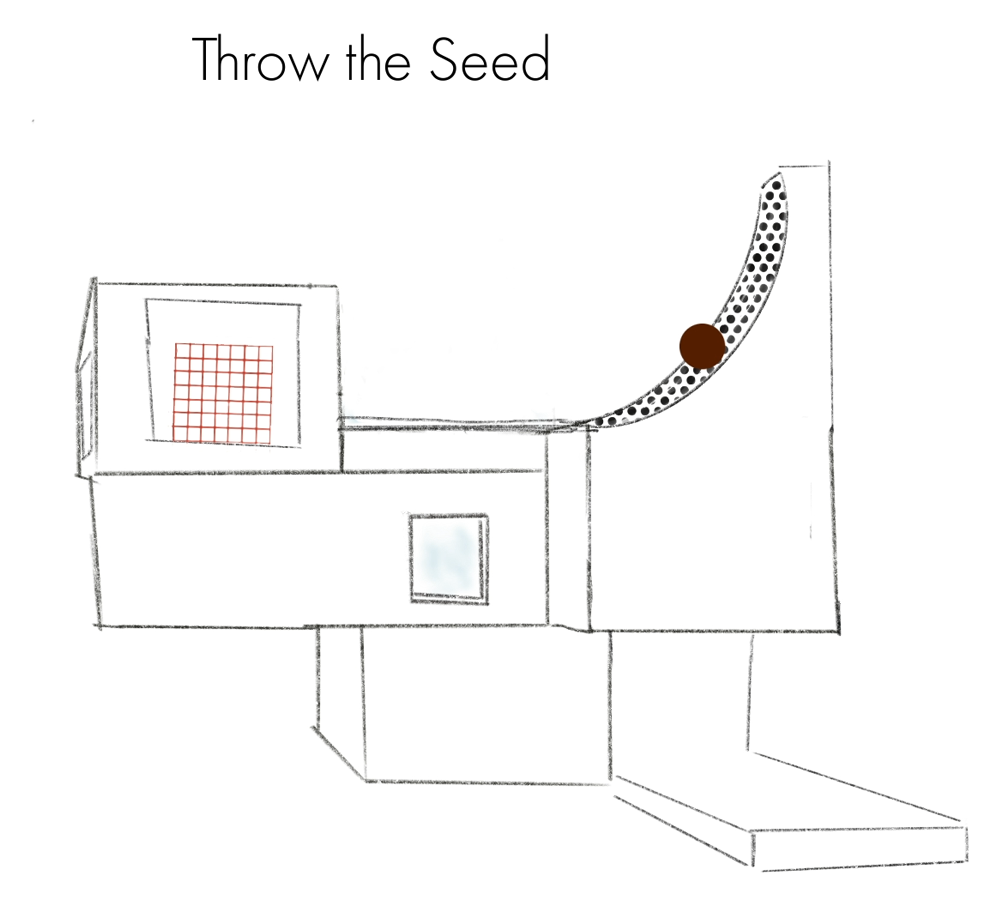
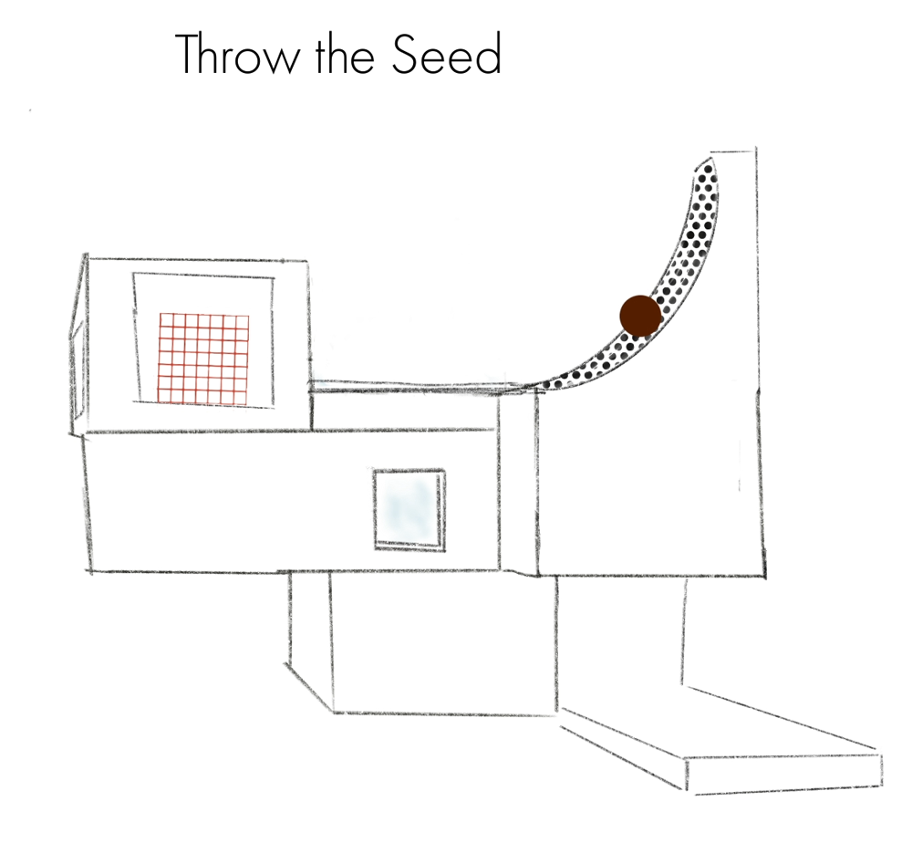

Herbal Warfare
Herbal Warfare is a prototype of a VR casual game developed by Cream Productions. In May 2020 I was hired as a creative lead and interaction designer to work on ideas for gameplay, user flow, interaction and overall visual design.

My Role
As a product designer, I worked in collaboration with a creative director, producer, developers and a graphic designer
Process
Research > Concept & Game
Design > Interaction & Level
Design > Prototyping > User Testing
Goal
To create and deliver a functioning prototype of a mobile VR casual game
Challenge
Our team was tasked to design a game with great replay value and a hook like Angry Birds. Casual mobile games like Angry Birds, where the main interaction is tapping on a screen, are extremely simple to pick up and play.
Our biggest challenge was creating the same simplicity in VR because you have to think and design spatially.
Solution
We designed our product by brainstorming gameplay that is highly engaging, satisfying and simplistic. We had to be deliberate of our choices and work within the constrains of the medium, bearing in mind the visual language as well as ergonomics.
 
